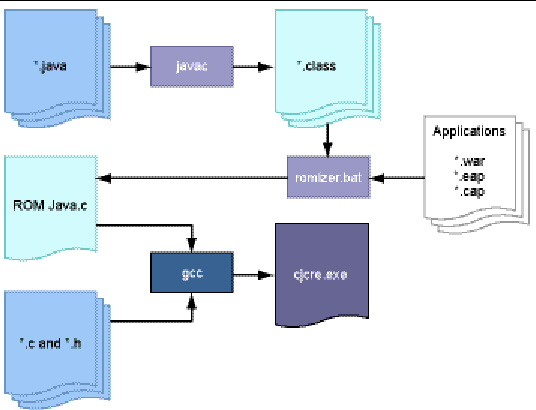

| Development Kit User’s Guide, Java Card 3 Platform, Version 3.0.2, Connected Edition |
| C H A P T E R 13 |
|
Building the RI From Sources |
This chapter describes how to build a customized Java Card 3 platform RI. This chapter is useful only if you have a source release of the development kit. The src folder under JC_CONNECTED_HOME contains all of the source files for the RI including VM code, and all tools (such as the packager and installer). You can modify or add to these files and build a customized Java Card 3 platform RI according to their specific requirements. The following actions are possible reasons a developer might have for building a custom RI:
This chapter contains the following sections:
Before building the RI, the following software must be installed on the system:
See Chapter 2 for more details on these requirements.
The following describes the contents of the src folder.
When building a custom RI, the ROMizer tool takes system class files and application modules as input and creates a ROM image of these in an output ROM image file. The ROMizer tool converts the class files into C code, which is often called a ROM mask or simply a mask. For applications, the ROMizer tool stores non-class files in appropriate directories in the internal Java Card 3 platform file system, so that these files are available during the execution of the application. See Building a Custom cjcre.exe for detailed description of using the ROMizer tool.
The command line interface for the ROMizer has the following syntax:
romizer.bat subcommand [options]
The following is a list of the subcommands for the ROMizer:
Use the romize subcommand and its options to romize the system class files and application modules. Options are used with the romize subcommand to specify files and directories.
TABLE 13-1 identifies the romize subcommand options and provides their descriptions.
|
Specifies the file that contains the list of applications to be masked. |
|
|
Specifies the file where the initial eeprom file is written. |
|
Either of the following commands will run the ROMizer tool:
romizer.bat romize -o ROM-output-filename -e EEPROM- filename -a apps-filename
romizer.bat romize --out ROM-output- filename --e2pfile EEPROM -filename \ --apps apps-filename
In the previous examples, the following options are used:
--out MyROMJava.c
See Romizer Tool Output for a description of the ROM output file.
--e2pfile myeeprom.eeprom
--apps myapps.list.
See Example Contents of Apps List File for a description of the configuration file.
The copyright subcommand displays the detailed copyright notice. There are no options associated with this subcommand.
The help subcommand displays information about the ROMizer. Options are used with the help subcommand to specify the information that is displayed about each sub-command.
For example, to see detailed help about the ROMizer tool, type:
romizer.bat help romize
The apps list file contains information about applications that need to be romized. All system classes and applications must be provided as input to the romizer in compressed files (.jar, .war, or .zip files).
Each application file must be specified in the apps list file on a new line. Each application module entry in the configuration file must provide additional information as noted in the following format example:
application-module -t <web|classic-applet|extended-applet|classic-lib| \ extension-lib> -s signature-file -n module-name
In the previous example, the following parameters are used:
This file is a simple properties file containing the following properties as name-value pairs:
The following is an example of an entry in the configuration file:
HelloWorld.war -t web -s mykey1.txt -n helloapp
The following is an example of the contents of an apps list file:
HelloWorld.war -t web -s key1.txt -n helloapp GCFClient.war -t web -s key2.txt -n gcfapp
The output created by running the ROMizer tool is a preliminary EEPROM file and a C language source file that contains the ROM image of the input file including the following:
The build.xml provided in the src folder build everything including tools and cjcre.exe. This section gives details on how the cjcre.exe is generated.
Developers can modify the RI by adding or modifying the reference implementation code and using the ROMizer tool. RI consists of .java and C source files. The core VM is written in C programming language and rest of the API and supported implementation is written in the Java programming language. The ROMizer tool converts the class files into C code, which is often called the ROM mask or simply the mask. Then all the C source code is compiled to an executable to generate cjcre.exe.
The ROM image can include any supported application files (web, extended-applet, classic-applet, extension library, and classic library). ROMized applications can be instantiated without requiring download after the runtime environment starts up. The ROMizer tool takes system class files and application module as input and creates a ROM image of these in an output ROM image file.
For applications, the ROMizer tool stores the non-class files in appropriate directories in the internal Java Card 3 platform file system, so that these files are available during the execution of the application.
FIGURE 13-1 illustrates the procedure of building the cjcre.exe from sources.
FIGURE 13-1 Building cjcre.exe From Sources

Java files are compiled into class files using the javac compiler. Details of applications to be ROMized are listed in a text file. The class files and the list file are given as input to the romizer.bat tool (see Preprocessor Symbols to Customize the VM). By default romizer.bat generates ROMJava.c, a C file that contains the information about all classes and applications.
The GNU C compiler (gcc) is used to build the final executable. The generated ROMJava.c and the rest of the C files are compiled using gcc, which generates cjcre.exe. Use the provided ANT build file to build custom cjcre.exe. See Build a Custom RI From the Command Line.
The following preprocessor symbols can be used to customize the Java Card VM:
Enables the kdwp code. Default is 1. If set to 0, then cjcre can not be used to debug the applications.
Enables the logging messages that are printed by using -loggerlevel=<value>. Default is 1. If set to 0, then even if -loggerlevel is set to all, no logging messages are printed from native code.
Controls the protocol that will be supported by cjcre. default is t=0. Valid values are 0, 1 for T=0, T=1 respectively.
Contacted or contactless or both. Valid values are 0, 1, 2 for contacted, contactless and Dual respectively
|
1. Edit the files or add more files.
2. Update the tools source code if required.
3. From command line navigate to the src folder and run the ant command.
If there is a apps list file that contains the list of applications for ROMization, set the property apps_file_for_romizer while running the ant command as shown:
ant -Dapps_file_for_romizer=path-to-apps-file
The ant command creates the JC_CONNECTED_HOME\custom_build folder with a bin and lib folder under it.
JC_CONNECTED_HOME\custom_build\bin and
JC_CONNECTED_HOME\custom_build\lib are similar to JC_CONNECTED_HOME\bin and JC_CONNECTED_HOME\lib, except that custom_build contains the binaries from the updated source code.
|
 Use the following command to run the new cjcre.exe file stored in JC_CONNECTED_HOME\custom_build\bin.
Use the following command to run the new cjcre.exe file stored in JC_CONNECTED_HOME\custom_build\bin.
JC_CONNECTED_HOME\custom_build\bin\cjcre.exe [options]
See Chapter 5 for a description of the available options.
Files created as a result of running or building the custom RI are stored in the JC_CONNECTED_HOME\custom_build\bin and JC_CONNECTED_HOME\custom_build\lib directories. These directories are created the first time the RI is built and will be over written every time the RI is built.
| Development Kit User’s Guide, Java Card 3 Platform, Version 3.0.2, Connected Edition | 12-14-09 |
Copyright © 2009 Sun Microsystems, Inc. All rights reserved.
 Build a Custom RI From the Command Line
Build a Custom RI From the Command Line